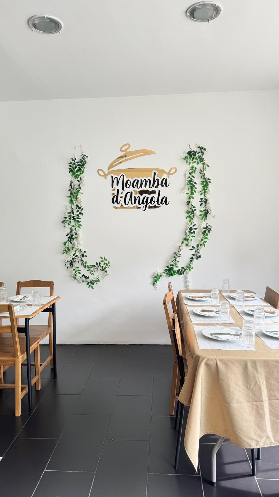

"A experiência foi simplesmente incrível — a moamba estava autêntica e cheia de sabor. Atendimento caloroso, volto sempre!"
Sobre Nós
A tradição e o sabor da autêntica cozinha angolana
Sobre Moamba d’Angola
A Moamba d'Angola celebra a rica culinária angolana: ingredientes frescos, técnicas transmitidas entre gerações e pratos que contam histórias. Inspiramo-nos nas cozinhas regionais para oferecer uma experiência gastronómica autêntica e acolhedora.
Venha provar moamba, funge, calulu, moamba de galinha e outros sabores que trazem Angola à sua mesa.
Eventos Especiais
Casamentos, batismos, aniversários e festas privadas — levamos a autenticidade angolana aos seus momentos especiais.
Take Away
Serviço de recolha disponível. Leve os sabores de Angola para casa, quente e fresco.
Ingredientes de Angola
Damos prioridade a fornecedores angolanos e ingredientes frescos para manter o sabor tradicional.
Receitas Autênticas
Receitas transmitidas pela nossa família e comunidade, preparadas com cuidado e respeito.
Acolhimento
Ambiente familiar e serviço caloroso — queremos que se sinta em casa.
Chef Moamba
Chef Jandira
Sendo angolana e com formação em cozinha tradicional, a Chef Jandira combina técnicas clássicas com toques contemporâneos para preservar sabores autênticos.
Desde 2020
Traçando sabores angolanos em Portugal
50+
Pratos e receitas no nosso menu
4.8★
Avaliação média dos nossos clientes

Depoimentos
"Ambiente familiar e pratos que lembram casa — recomendo para quem procura sabores angolanos genuínos."
"Ótima relação qualidade-preço. Pratos bem servidos e sabores autênticos — perfeito para um jantar em família."
"Serviço rápido e comida com um toque caseiro — a família adorou. Voltaremos sem dúvida."
Contactos
Venha nos visitar e saborear o melhor da gastronomia angolana.
Localização
R. 5 de Outubro 216, 4420-086 S. Cosme